Multiple Legends
Gilles Colling
2026-10-10
Source:vignettes/multiple-legends.Rmd
multiple-legends.RmdInstallation
install.packages("ggguides") # CRAN
install.packages("pak") # development version
pak::pak("gcol33/ggguides")Overview
When a plot maps multiple aesthetics (colour, size, shape, etc.), ggplot2 creates separate legends for each. ggguides provides functions to control these legends individually:
Hide specific legends with
legend_hide()Keep only certain legends with
legend_select()Control display order with
legend_order_guides()Force merge/split with
legend_merge()andlegend_split()Position legends separately using
byparameter on position functionsStyle legends separately using
byparameter onlegend_style()
Example Plot
# Plot with multiple aesthetics
p <- ggplot(mtcars, aes(mpg, wt,
color = factor(cyl),
size = hp,
shape = factor(am))) +
geom_point() +
labs(color = "Cylinders", size = "Horsepower", shape = "Transmission")
p
Hiding Legends
Use legend_hide() to remove specific legends while
keeping others:
# Hide the size legend
p + legend_hide(size)
# Hide multiple legends
p + legend_hide(size, shape)
Selecting Legends
Use legend_select() to keep only certain legends
(inverse of legend_hide()):
# Keep only the colour legend
p + legend_select(colour)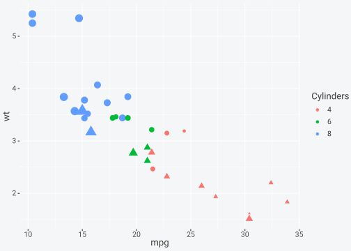
# Keep colour and shape
p + legend_select(colour, shape)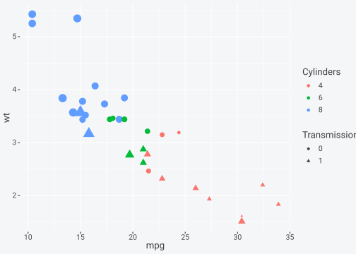
Controlling Legend Order
By default, legends appear in an unspecified order. Use
legend_order_guides() to control the display order:
# Default order
p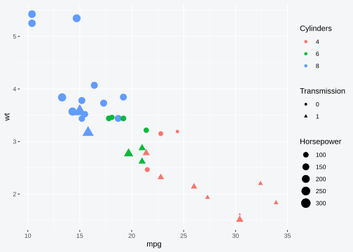
# Size legend first, then colour, then shape
p + legend_order_guides(size = 1, colour = 2, shape = 3)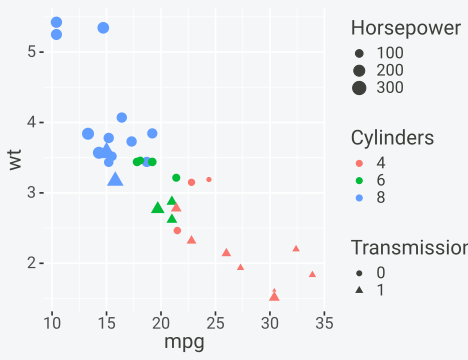
Merging and Splitting Legends
ggplot2 automatically merges legends when they have the same title
and matching labels. Use legend_merge() and
legend_split() to override this behavior.
Forcing Merge
# Plot where colour and fill map to the same variable
p_merge <- ggplot(mtcars, aes(mpg, wt, color = factor(cyl), fill = factor(cyl))) +
geom_point(shape = 21, size = 4, stroke = 1.5) +
labs(color = "Cylinders", fill = "Cylinders")
# Legends merge automatically when titles and labels match
p_merge
# Explicitly request merge (reinforces default behavior)
p_merge + legend_merge(colour, fill)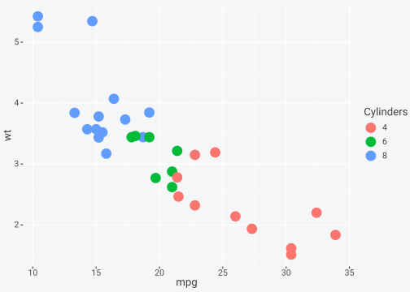
Forcing Split
# Force separate legends even when they could merge
p_merge + legend_split(colour, fill)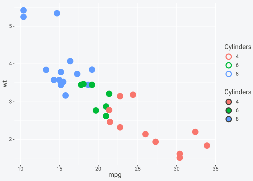
Positioning Legends Separately
Position functions (legend_left(),
legend_right(), legend_top(),
legend_bottom()) accept a by parameter to
position specific legends:
# Place colour legend on the left, size legend at bottom
p +
legend_hide(shape) +
legend_left(by = "colour") +
legend_bottom(by = "size")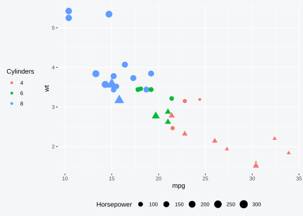
# Colour legend on top, size on right
p +
legend_hide(shape) +
legend_top(by = "colour") +
legend_right(by = "size")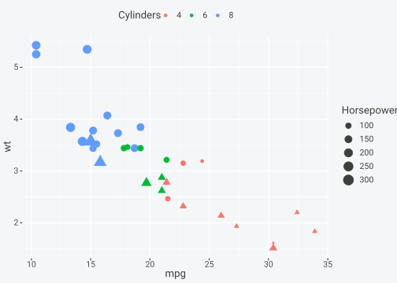
Styling Legends Separately
Use the by parameter on legend_style() to
apply different styles to different legends:
p +
legend_hide(shape) +
legend_style(title_face = "bold", background = "grey95", by = "colour") +
legend_style(size = 10, by = "size")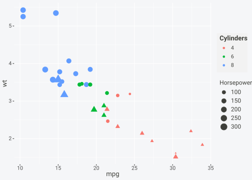
Combining Multiple Controls
All functions work together:
# Complex example: hide shape, position colour on left with bold title,
# position size at bottom with smaller text
p +
legend_hide(shape) +
legend_left(by = "colour") +
legend_style(title_face = "bold", title_size = 14, by = "colour") +
legend_bottom(by = "size") +
legend_style(size = 9, direction = "horizontal", by = "size")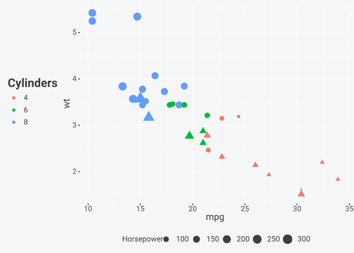
Four Legends, One per Side
When a plot has four legends and you want one on each side (top, bottom, left, right), you can fine-tune each legend along three axes:
Side placement —
legend_top/bottom/left/right(by = "<aes>")Distance from the panel —
legend_style(by = "<aes>", margin = c(t, r, b, l))Slide along the side —
legend_style(by = "<aes>", justification = ...)
For top/bottom legends, justification is
"left", "center", "right" (or a
number in [0, 1]). For left/right legends, it’s
"top", "center", "bottom" (or a
number).
p4 <- ggplot(mtcars, aes(mpg, wt,
colour = factor(cyl),
fill = factor(gear),
size = hp,
shape = factor(am))) +
geom_point(stroke = 1.2) +
labs(colour = "Cyl", fill = "Gear", size = "HP", shape = "AM")
p4 +
# 1. Send each legend to its side
legend_top (by = "colour") +
legend_bottom(by = "fill") +
legend_left (by = "size") +
legend_right (by = "shape") +
# 2. Slide each legend along its side
legend_style(by = "colour", justification = "left") +
legend_style(by = "fill", justification = "right") +
legend_style(by = "size", justification = "top") +
legend_style(by = "shape", justification = "bottom") +
# 3. Nudge each legend toward/away from the panel via margin (cm)
legend_style(by = "colour", margin = c(0, 0, 0.3, 0)) +
legend_style(by = "fill", margin = c(0.3, 0, 0, 0)) +
legend_style(by = "size", margin = c(0, 0.3, 0, 0)) +
legend_style(by = "shape", margin = c(0, 0, 0, 0.3))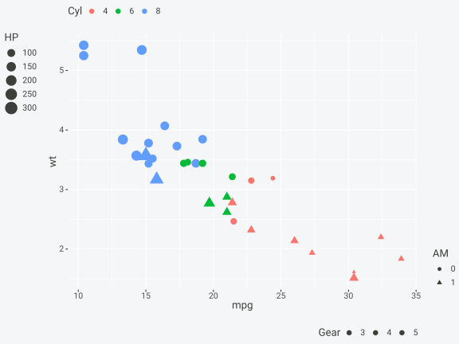
Each legend_style(by = ...) call is additive — you can
chain as many as you need to tune one legend at a time without affecting
the others.
Six Legends, Stacked per Side
More than one legend can share a side. ggplot2 stacks them in the order it resolves them, and ggguides lets you pick which legend goes where, slide it along the rail, and style it without touching the others. The plot below has six legends: two on top, two on the right, one on the bottom, one on the left.
p6 <- ggplot(mtcars, aes(mpg, wt)) +
geom_smooth(aes(linetype = factor(vs)), method = "lm", se = FALSE,
colour = "grey40") +
geom_point(aes(colour = factor(cyl),
fill = factor(gear),
size = hp,
alpha = qsec,
shape = factor(am)),
stroke = 1.2) +
scale_shape_manual(values = c(21, 24)) +
labs(colour = "Cyl", fill = "Gear", size = "HP",
alpha = "QSec", shape = "AM", linetype = "VS")
p6 +
# 1. Side placement — two legends share the top, two share the right
legend_top (by = "colour") +
legend_top (by = "fill") +
legend_right (by = "size") +
legend_right (by = "alpha") +
legend_bottom(by = "shape") +
legend_left (by = "linetype") +
# 2. Slide each legend along its rail
# top/bottom rails: "left" / "center" / "right" (or a number in [0,1])
# left/right rails: "top" / "center" / "bottom"
legend_style(by = "colour", justification = "left") +
legend_style(by = "fill", justification = "right") +
legend_style(by = "size", justification = "top") +
legend_style(by = "alpha", justification = "bottom") +
legend_style(by = "shape", justification = "center") +
legend_style(by = "linetype", justification = "center") +
# 3. Appearance — per-legend title weight, key size, direction, text size
legend_style(by = "colour", title_face = "bold",
key_width = 0.4, key_height = 0.4) +
legend_style(by = "fill", title_face = "bold",
key_width = 0.4, key_height = 0.4) +
legend_style(by = "size", title_size = 9, size = 8) +
legend_style(by = "alpha", title_size = 9, size = 8) +
legend_style(by = "shape", direction = "horizontal") +
legend_style(by = "linetype", direction = "vertical") +
# 4. Nudge each legend toward/away from the panel via margin (cm)
# order is c(top, right, bottom, left)
legend_style(by = "colour", margin = c(0, 0, 0.2, 0)) +
legend_style(by = "fill", margin = c(0, 0, 0.2, 0)) +
legend_style(by = "size", margin = c(0, 0, 0, 0.3)) +
legend_style(by = "alpha", margin = c(0, 0, 0, 0.3)) +
legend_style(by = "shape", margin = c(0.3, 0, 0, 0)) +
legend_style(by = "linetype", margin = c(0, 0.3, 0, 0))
#> `geom_smooth()` using formula = 'y ~ x'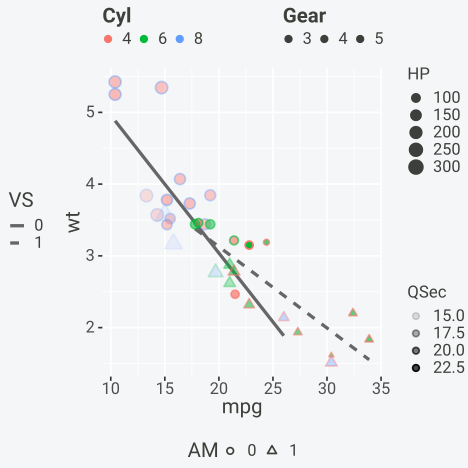
What each step is doing
Step 1, side placement.
legend_<side>(by = "<aes>") sends one legend to
one side. Call it twice with different aesthetics and both legends land
on that side. In the example, colour and fill
share the top rail, size and alpha share the
right rail, and shape and linetype each get a
side of their own.
Step 2, slide along the rail.
legend_style(by = "<aes>", justification = ...)
repositions a single legend without affecting its neighbours. The
keyword interpretation depends on which rail the legend sits on:
Top or bottom rail (horizontal):
"left","center","right", or a number in[0, 1]where 0 is flush left and 1 is flush right. In the example,coloursits at the left end of the top rail andfillat the right end, so the two top legends land in opposite corners.Left or right rail (vertical):
"top","center","bottom", or a number where 0 is bottom and 1 is top.sizesits at the top of the right rail andalphaat the bottom.
The per-guide form is what you want when different legends need
different alignments. For a single alignment applied to every legend at
once, use legend_style(justification = ...) without
by.
Step 3, appearance. Anything
legend_style() accepts (title_face,
title_size, size for label text,
key_width, key_height, direction,
background, and so on) can be scoped to a single legend by
adding by = "<aes>". Each call tunes one legend and
leaves the others alone, so chaining several short calls is the intended
shape. In the example the top legends get bold titles and smaller keys,
the right legends get smaller text, shape is forced
horizontal so it fits the bottom rail, and linetype stays
vertical for the left rail.
Step 4, padding.
margin = c(top, right, bottom, left) (in cm) moves a single
legend toward or away from the panel. Pad on the side that faces the
panel: a bottom legend uses c(top, 0, 0, 0), a left legend
uses c(0, right, 0, 0). Without padding, legends often end
up pressed against the axis text; a few tenths of a centimetre usually
fixes it.
Why one line per parameter
legend_style(by = "<aes>", ...) calls are
additive. You can fold every style argument for colour into
a single call, but splitting by concern (position, alignment,
appearance, padding) keeps each parameter on a line that is easy to
locate. When a reviewer asks to move the colour legend half a centimetre
down, the edit is one number on one line.
Summary
| Function | Purpose | Parameters |
|---|---|---|
legend_hide() |
Hide specific legends | Aesthetic names (unquoted) |
legend_select() |
Keep only specific legends | Aesthetic names (unquoted) |
legend_order_guides() |
Control legend display order | Named args: aes = order
|
legend_merge() |
Force legends to merge | Aesthetic names (unquoted) |
legend_split() |
Force legends to stay separate | Aesthetic names (unquoted) |
legend_left(by=) |
Position one legend on left | by = "aesthetic" |
legend_style(by=) |
Style one legend |
by = "aesthetic" + style args |
Learn more:
Legend Positioning for single-legend placement
Styling & Customization for legend appearance
Patchwork Integration for multi-panel plots